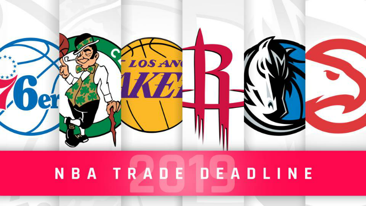

Harrison Leitner
Harrison LeitnerPlayers change teams every year in the NBA and it is a big part of what keeps the league so exciting. Arguably, the most exciting transactions of the year come from trades. The trading of players and assets between teams has become a yearly spectacle. Every year during the first week of February, the buzz around the league is extremely high in anticipation of a lot of roster moves before the trade deadline.
The purpose of the NBA's trade dealine is to maintain competitive balance towards the end of the season. In the NBA, no team is allowed to make a trade after the deadline under any circumstance. This season's deadline rumors swirled around New Orleans Pelicans' center Anthony Davis. Davis has cemented himself as one of the best players in the league and these thoughts were confirmed by the rumors that the Lakers were willing to give up nearly anything to land him.
In the end, no one was able to offer the Pelicans anything they were looking for so they held on to Davis. However, that did not mean the trade deadline went without excitement. One of the headline moves of this year's deadline was Grizzlies' center Marc Gasol's move from Memphis to Toronto to join the Raptors. As a Grizzlies fan this was very tough for me as Gasol had been on the team for 11 straight seasons. Another big move came from LA, where Clippers' big man Tobias Harris made his move to Philadelphia to join the 76ers. These types of trade deadline moves are made in order to help out there teams before the playoffs.
There is a very large viewer base for the NBA's trade deadline as people are always anticipating a big move from their favorite team. The trade deadline madness gets so big that certain reporters, such as Adrian Wojnarowski, have made their career off of being the first person to get the inside scoop. Wojnarowski is notorious in the NBA world for his ability to be the first to know. His success in this department has netted him nearly 3 million twitter followers. The trade deadline season has just ended, but for NBA fans like myself the season is just heatng up. Playoffs are around the corner and I know my fellow sports management majors and I will be heavily anticipating their return.
I only had one player in my 33 years of sports that couldn't be traded. He wore No. 23 - and 45 when he played baseball. ~Jerry Reinsdorf